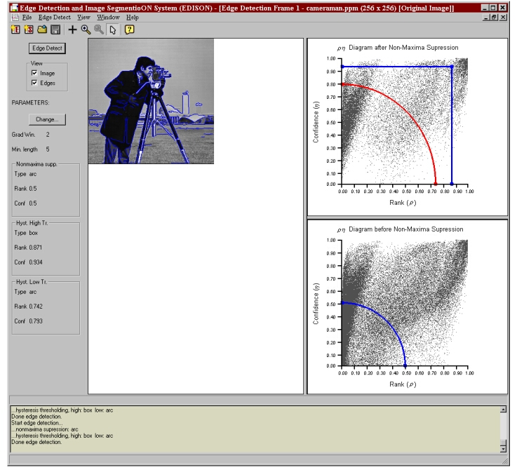

This program implements the edge detection algorithm described in [2].
Usage instructions:
The gradient rank-confidence space before non-maxima suppression is displayed
in the lower right panel of the current edge frame. The curve used for non-maxima
suppression is displayed within this frame. The same space after non-maxima
suppression is displayed in the upper right panel of the current edge detection
frame. The curves for hysteresis
thresholding (blue - high curve, red - low curve) are displayed within this
frame.
The shape and location of each curve may be modified. To change the location
of a curve select it and drag it with the mouse to the new location.
To change the shape of a curve right click the desired curve and select
the desired shape from the drop down menu.
One option displayed in this menu allows for the definition of a custom
shape. To create a custom shape, first add or delete nodes from the curve by
right clicking the mouse over the desired node location on the curve and
selecting either Add Node or Delete Node from the drop down menu.
Then drag these nodes to their respective locations to form the desired custom
curve.
The parameters generated by the above curves may also be entered manually. To
do so, from the Edge Detect menu select Change Parameters or click
on the Parameters button located on the left of the current edge detection
frame. This option also allows for changing the filter size and the minimum
number of pixels on an edge.
NOTE: After changing the parameters the edge map is not automatically updated, you must run the algorithm again to see the result.